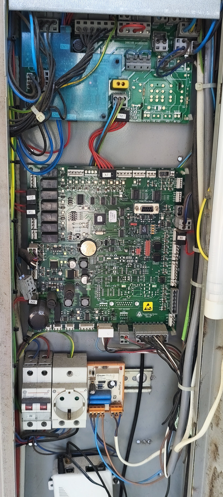

| Código | Significado / Descrição da Avaria Técnico |
|---|---|
| Avaria 0: | Falha de sensores de porta e bloqueios temporários (não bloqueante). |
| Avaria 1: | Falha de contactores (bloqueante). |
| Avaria 2: | Inversão de fases, ambos os limites accionados (bloqueante). |
| Avaria 3: | Revisão, recuperação e módulo SR. |
| Avaria 4: | Abertura de série de portas em movimento (não bloqueante). |
| Avaria 5: | Falha de abertura da série de portas (não bloqueante). |
| Avaria 6: | Erro de contagem de pantalhas (não bloqueante). |
| Avaria 7: | Falha no fecho de portas (não bloqueante). |
| Avaria 8: | Não detecta as pantalhas, falha de comunicação com a cabina, não sai da pantalha, falha do indutor em nivelação (bloqueante). |
| Avaria 9: | Erro de programa, abertura da série de seguranças, falha da alimentação. |
| Circuito / Componente | Conector e Bornes de Medição |
|---|---|
| Alimentação Geral / Fusível Entrada | A3 a CN16.2 (OVH) |
| Stop de Máquina | CN31.1 (A1) a CN33.1 (A1) |
| Stop Botoneira de Poço e Roda Tensora (Cabine/Contrapeso) | CN33.2 (A2) a CN16.1 (12V) |
| Limitador de Velocidade da Cabine e Contra-peso | CN26.1 (A3) a CN26.2 (A4) |
| Amortecedores (Cabine e Contra-peso) | CN26.3 (A5) a CN31.1 (VF1) |
| Seguranças de Cabine (Stop teto, revisão, paraquedas, trincos cabine) | CN27.1 (A6) a CN27.2 (A7) |
| Contactos de Presença de Piso — Frontal (Fecho de Portas) | CN31.6 (B1) a CN31.5 (B2) |
| Contactos de Presença de Piso — Traseira (se aplicável) | CN31.4 (B3) a CN31.3 (B4) |
| Contacto de Porta de Cabina (Frontal / Posterior) | CN32.2 (C1) a CN32.1 (C2) |
| Contactos de Encravamento Frontal (Trincos) | CN36.1 (C3) a CN31.1 (E6) |
| Contactos de Encravamento Traseira (Trincos) | CN35.3 (C5) a CN25.2 (C4) |